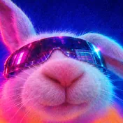

The reason
Work is mostly talk.
So a project's plan, files and launch live in the chat.
CH
Copper Hours
Theo, Ines, Kofi, You
0:21
KofiDock Hall 3 is free on the 20th.6:40 PM
ZIP
copper-hours_stems_v4.zip
2.1 GB · full size
Catch upOnly you
- Launch night is on.
↳ Kofi · Wed 6:40 PM
Visualizer cut · Theo · Nov 12
Which cover?Poll · 4 votes
A · Horizon1
B · Grooves3
Public
NOV20
Fri · Doors 9 PM
Dock Hall 3
GoingMaybeGoing · 27
StoryPostLink page
Who it is forCreative crews. Copper Hours is the demo crew.

Artist and producerMayaStems at full size, and a catch-up after a long session.
- Video directorTheo
A cut with an owner and a due date.
 DesignerInes
DesignerInesOne vote that settles the cover.
- Shows and venuesKofi
An event the room can RSVP to.